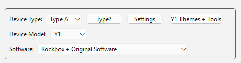
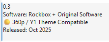
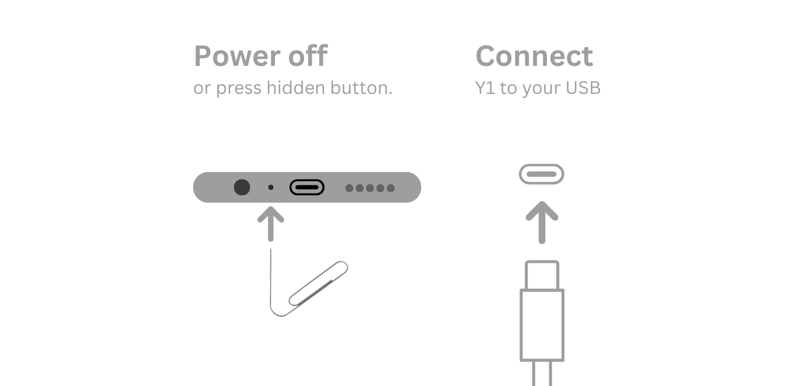

This guide applies to Windows, macOS, and Linux. Set up the computer first, then choose the software for your Y1 or Y2. Y1 and Y2 packages are separate, and Updater CE keeps them that way.
Have the player you want to update, a USB data cable, and a Windows, macOS, or Linux computer. Charge the player first. A cable that only charges cannot carry the install.
Important: software installation changes system software. Keep the cable connected until Updater CE says it is safe to disconnect. If a custom install does not start, the normal recovery path is Original Software for the same model.
Get Innioasis Updater CE
Here's where to start if you haven't already got Updater CE.
Get it on Updater CEwith guided install
Windows
Download the installer, open it, and follow the setup prompts.
You'll need to reboot your PC after installing to make it work.
macOS
Download the app, move it to Applications, then open it. If macOS warns about an unidentified developer, Control-click the app and choose Open. Updater CE needs Homebrew to install the software packages it uses.
Need the longer computer setup notes? Open the Windows, macOS, or Linux setup guide.
Choose your model and software
Open Updater CE and follow the labels in the window. Select your model first, then select the software you want to run on that model.
Device Type: Type A suits Y1 players that shipped with Original Software version 2.0.0 or later. Type B suits Y1 players that shipped with an earlier version of the Original Software. Leave the default Type A unless your player needs Type B.
Device Model: select the model printed on your player, Y1 or Y2. Do not choose the other model because the software files and install path are different.

The model and software choices appear together in Updater CE.
Software: select Original Software, Rockbox, Solar, JJ Launcher, Inniclassic, Y2Player, or Koensayr when it is listed for your model.
Release: select a release for the software and model you chose. Prefer a stable release unless you have a reason to test a preview or nightly build.

Choose the release that matches the model and project you selected.
Install or restore
Click Install / Restore. Updater CE downloads the selected package and extracts the files it needs.
Wait for the connection instructions. Do not connect the player early unless the app specifically tells you to.
Power the player fully off. If it will not shut down normally, follow the exact recovery prompt shown by Updater CE.
Connect the USB data cable when Updater CE says it is ready. Put the player down and do not move the cable.
When the app confirms success, disconnect the cable and start the player.

Follow the live Updater CE prompt for the selected model.
Going back to Original Software
You can return from Rockbox or another listed custom software with Updater CE. After the relevant Windows, macOS, or Linux setup is ready, this is not a different emergency tool: repeat the same Install / Restore journey and choose Original Software for the same model.
Open Updater CE on the computer where you installed it. This works on Windows, macOS, and Linux.
Choose the model printed on the player. Never use a Y1 stock package on a Y2 or a Y2 package on a Y1.
Select Original Software, then choose a stable release shown for that model.
Click Install / Restore and wait for the app’s connection instructions.
Power off and connect the USB data cable only when Updater CE asks. Leave the player and cable alone until the success message.
If you came from Solar or Rockbox: do not try to remove folders or change hidden files first. The stock restore is a software install, so let Updater replace the system software for you.
If the app stops before the USB prompt, check the platform setup, driver or permissions, data cable, and model selection in troubleshooting. Manual SP Flash Tool and MTKClient routes are for advanced recovery, not the normal return-to-stock path. If you do need SP Flash Tool, it ships inside Updater CE on Windows and Linux.
Video by Frawgeeys. It walks through installing Rockbox with Updater CE; use the model-specific written steps below for your Y1 or Y2.
Software guides by model
Pick the model printed on your player, then open the guide for the software you want. The model comes first so the guide stays model-matched.
Innioasis Y1
Software for Y1:
Innioasis Y2
Software for Y2:
A note on the two tools
Which Innioasis Updater should you use?
Innioasis Updater CE
CE is the original community-made, donation-supported utility for Y1 and Y2. It loads official firmware directly from Innioasis and current custom releases from the Community Firmware Archive, so Rockbox, JJ Launcher, Inniclassic, Solar, and other projects are visible in the app without hunting through download links and tutorial pages.
The manufacturer-provided tool is intended for manually flashing and installing official firmware packages supplied as .zip or .rar files. Use it when you already have a specific official package to flash; for custom firmware, Updater CE is usually the better choice.